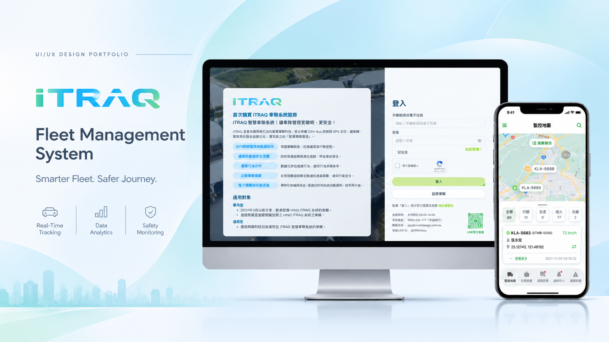
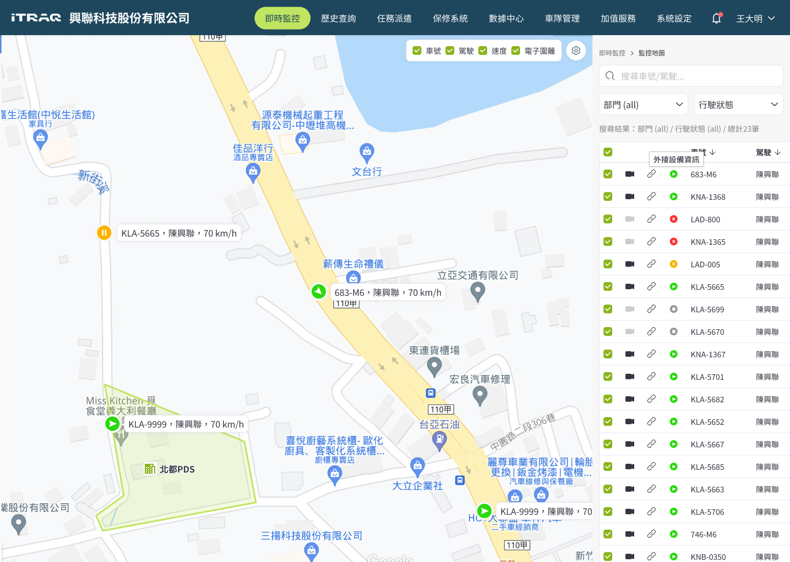
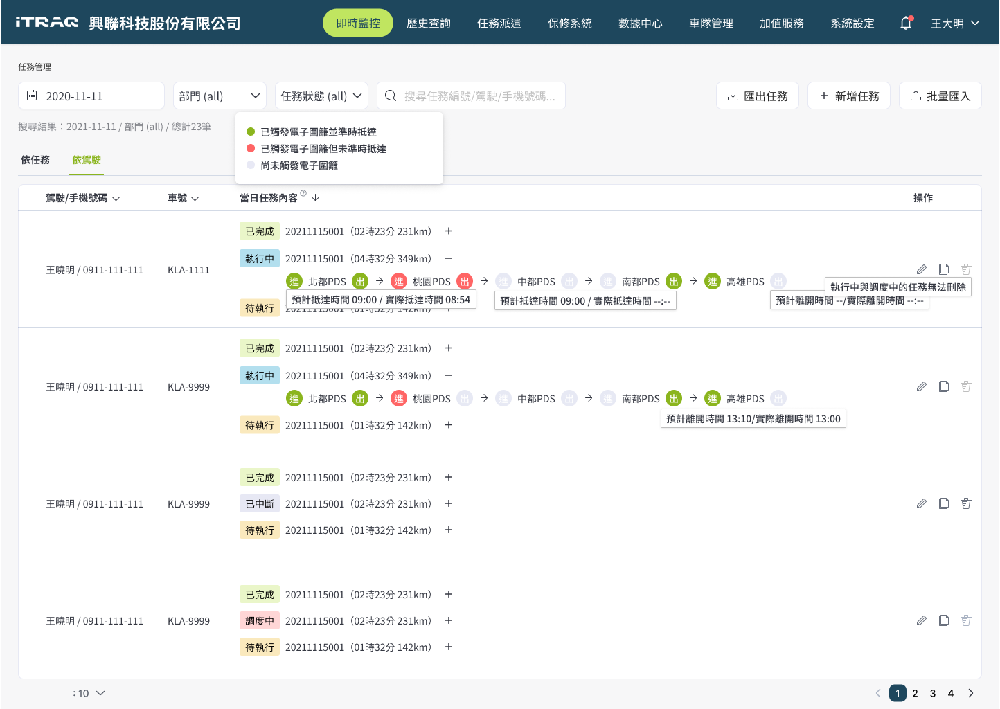
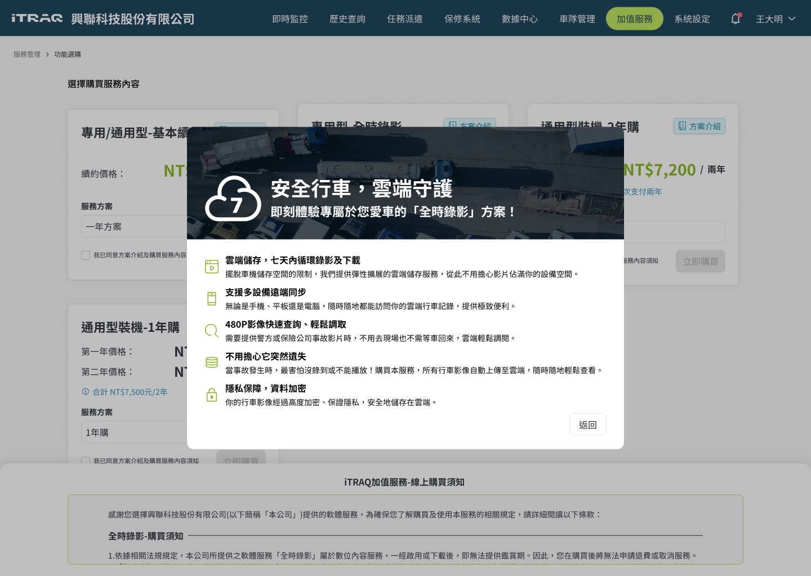
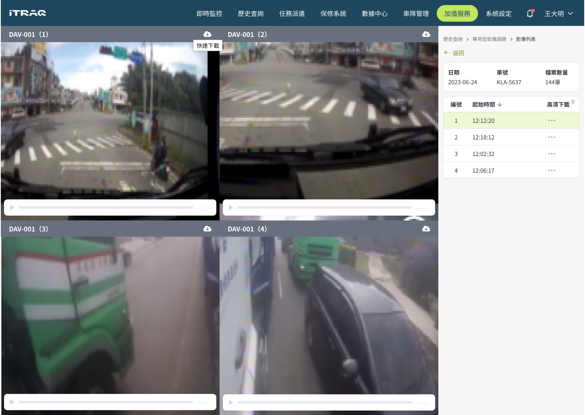
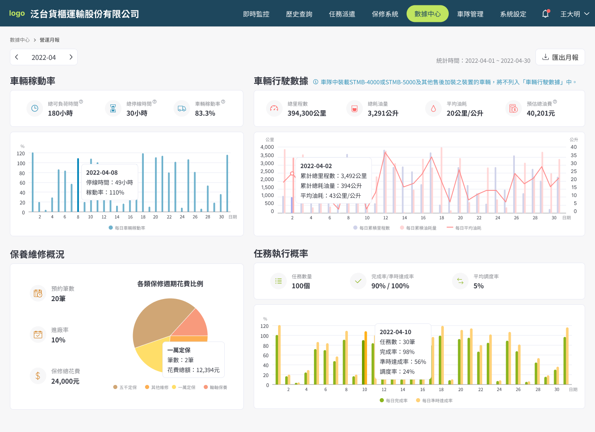

iTRAQ 車隊管理系統
為商用車提供車聯服務，整合多種外接設備，讓管理者即時掌握駕駛與車輛狀況，降低營業風險並提升管理效率。
- 我的角色
- 負責項目
- 平台
- 產品階段

01
背景與角色
iTRAQ 整合多種外接設備，讓車隊管理者即時追蹤駕駛與車輛，把日常管理數位化，降低營業風險、保護駕駛安全並提升管理效率。
我以產品設計師的角色參與，從功能需求企劃做到介面設計，一路跟到功能上線：
- 影像調閱規劃選擇車輛與時段、調閱行車影像到下載的流程，並設計多鏡頭同步檢視的介面。
- 線上購買規劃加值服務的選購流程，讓管理者自行選擇方案與車輛、確認金額後下單。
- 金流串接規劃付款流程與付款結果的呈現，串接第三方金流，讓購買可以在系統內直接完成。
02
研究與洞察
以競品分析、車隊管理者訪談、使用者故事、同理心地圖、人物誌與用戶旅程地圖，釐清三種使用者各自要完成的事，再對應到 Web 與 App 的功能。
-
Web + App
車隊管理者
想要用好操作的工具管理車隊，即時掌握車輛狀況、調度任務並處理突發狀況。
卡關許多流程靠手動（例如計算里程），還要在多個系統之間來回切換；定位不準時得再比對歷史軌跡。
監控地圖、任務派遣、歷史軌跡與營運月報集中在同一個系統。
-
App
車隊駕駛
想要查看任務指派與行車動線，行駛途中遇到狀況能即時聯繫與通報。
卡關語音訊息是一位駕駛對多位管理者的聊天視窗，想找其他駕駛只能改用通訊軟體。
駕駛專屬的 App 介面，以派遣任務、事件列表與語音訊息為主。
-
App
個人用戶
想要兼職送貨的個人駕駛，想用簡單的工具查看地圖與行車動線，日後也能加入車隊。
卡關一開始不知道怎麼進入車隊管理系統，得透過車隊管理者協助。
提供簡易版與個人用戶 App，之後可再註冊或納管進車隊。
03
設計重點
-
01
依身分拆分 Web 與 App
Web 只給車隊管理者，提供最完整的功能；App 則分為管理者、駕駛、個人用戶三種身分，各自看到需要的功能。
-
02
從研究推導產品架構
把車隊管理者訪談與研究歸納出的三種身分與需求，對應成功能架構：先盤點 Web、App 與維運後台的功能，再決定每種身分看得到哪些功能。
-
03
漸進式開通流程
購車後掃描 QR Code 就能開通並使用簡易版，之後再依需求註冊個體戶 App 或車隊，降低一開始的門檻。
-
01
開通裝置
購車後以手機掃描 QR Code，在手機瀏覽器完成開通。
-
02
簡易版
開通後即可使用監控地圖與行程列表等基本功能。
-
03
註冊
單人單車註冊個體戶 App；有車隊需求則註冊車隊。
-
04
完整車隊管理
管理者使用 Web 與 App，駕駛使用 App，並可納管車輛與駕駛。
04
實際介面展示
以車隊管理者身分為主的五個核心功能。





05
成果
下一步：擴大外接設備的整合與銷售，並以數據持續優化使用體驗。
中途加入一個已經運作多年的產品，我學到要先讀懂既有架構與使用者習慣，再提出改動。進入維運階段後，則以 GA 數據與管理者回饋排定優化順序，把有限的資源放在最影響開通與活躍的環節。